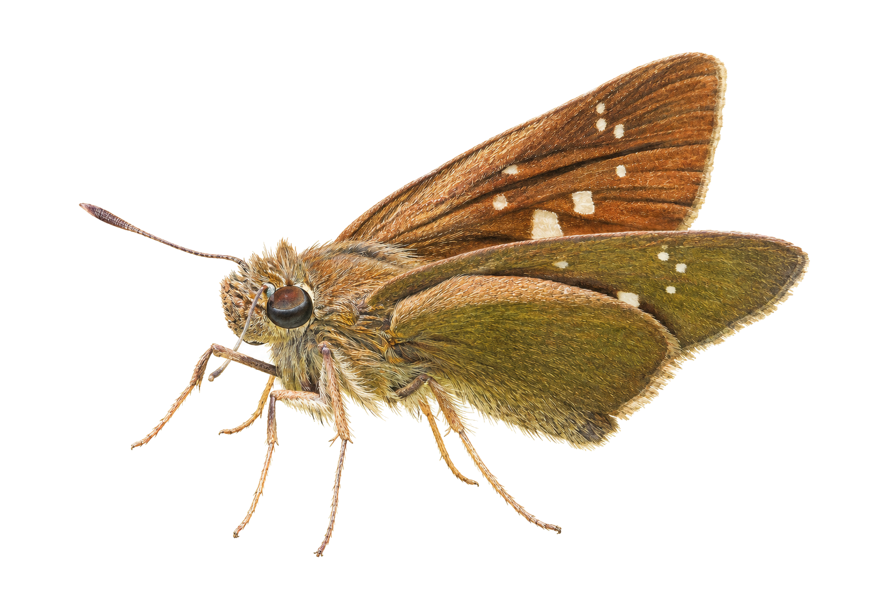

Hesperiidae · 156 / 165
Pelopidas mathias
Pelopidas mathias

বৈশিষ্ট্য ও শনাক্তকরণ
বাদামি ডানায় ছোট সাদা দাগ থাকে। Parnara guttata-এর মতো, তবে পেছনের ডানার দাগ সোজা সারিতে সাজানো নয়।
স্ত্রী ও পুরুষের পার্থক্য
পুরুষের সামনের ডানায় ফ্যাকাশে রেখার মতো যৌনচিহ্ন থাকে; স্ত্রীর সাদা দাগ বেশি স্পষ্ট ও কিছুটা সূচালো।
আকার
সামনের এক ডানার দৈর্ঘ্য ১৮–২০ মিমি; ওসাকা প্রাকৃতিক ইতিহাস জাদুঘরের নির্দেশিকার মান। শুধু ওকিনাওয়ার পরিমাপ নয়।
ওকিনাওয়ার দ্বীপে রেকর্ড
ওকিনাওয়া, মিয়াকো, ইয়ায়েয়ামা ও উত্তর-দক্ষিণ দাইতোসহ বহু দ্বীপে রেকর্ড আছে।
আবাসস্থল
তৃণভূমি, ক্ষেত, পথের ধার ও ফুলযুক্ত স্থান।
জীবনযাপন ও অতিরিক্ত তথ্য
ঘনিষ্ঠ Pelopidas agna থেকে আলাদা করতে সামনের ডানার সাদা দাগ ও যৌনচিহ্নও দেখুন।
শূককীট ও খাদ্য উদ্ভিদ
ধান, Miscanthus, আখ, Digitaria ও Imperata-সহ বহু Poaceae উদ্ভিদ খায়।
তথ্যসূত্র ও সহায়ক পাঠ
- 日本の蝶：形態・雌雄差
ডেটায় উল্লেখিত সূত্র দেখার তারিখ: 2026-11-10 - 沖縄蝶類生態図鑑：チャバネセセリ
ডেটায় উল্লেখিত সূত্র দেখার তারিখ: 2026-11-10 - 大阪市立自然史博物館：チャバネセセリ
ডেটায় উল্লেখিত সূত্র দেখার তারিখ: 2026-11-10
তথ্য সরবরাহকৃত ডেটার উপর ভিত্তি করে তৈরি (হালনাগাদ: ১০ নভেম্বর ২০২৬)। কোনো দ্বীপের রেকর্ড সেখানে বর্তমান স্থায়ী বসবাস বা সহজে দেখা পাওয়ার নিশ্চয়তা নয়। চিত্র নির্দেশক; শনাক্তকরণে বাস্তব নমুনা ও সূত্র মিলিয়ে দেখুন।